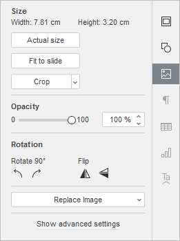
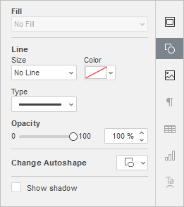
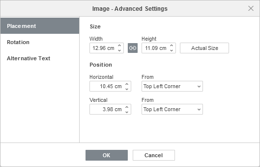
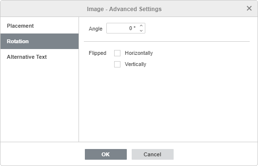
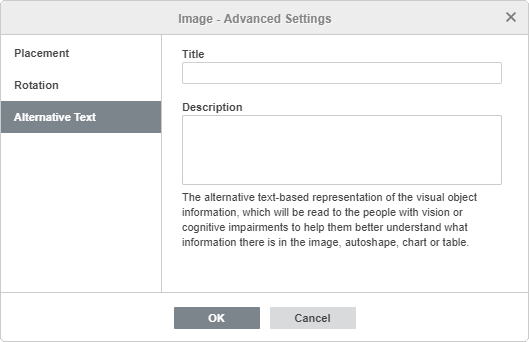

Umetnite i prilagodite slike
Umetnite sliku
U Presentation Editor-u možete umetnuti slike u najpopularnijim formatima u prezentaciju. Podržani su sledeći formati slika: BMP, GIF, JPEG, JPG, PNG.
Da biste dodali sliku na slajd,
- na listi slajdova sa leve strane izaberite slajd na koji želite da dodate sliku,
- kliknite na ikonicu Image na tabu Home ili Insert na gornjoj alatnoj traci,
-
izaberite jednu od sledećih opcija za učitavanje slike:
-
opcija Image from File otvara standardni dijalog prozor kako biste mogli da izaberete fajl. Pregledajte čvrsti disk računara da biste izabrali potrebnu datoteku i kliknite na dugme Open
U online editoru možete izabrati više slika odjednom.
- opcija Image from URL otvara prozor u koji možete uneti web adresu potrebne slike i kliknuti na dugme OK
- opcija Image from Storage otvara prozor Select data source. Izaberite sliku sačuvanu na portalu i kliknite na dugme OK
-
opcija Image from File otvara standardni dijalog prozor kako biste mogli da izaberete fajl. Pregledajte čvrsti disk računara da biste izabrali potrebnu datoteku i kliknite na dugme Open
- kada je slika dodata, možete promeniti njenu veličinu i položaj. Sliku možete sačuvati kao sliku na čvrstom disku koristeći opciju Save as picture iz menija desnog klika.
Takođe možete dodati sliku u držač teksta pritiskom na Image from file u njemu i izborom potrebne slike sačuvane na računaru, ili koristiti dugme Image from URL i navesti URL adresu slike:

Takođe je moguće dodati sliku u raspored slajda. Da biste saznali više, pogledajte ovaj članak.
Podesite podešavanja slike
Desna bočna traka se aktivira kada kliknete levim tasterom miša na sliku i izaberete ikonicu Image settings sa desne strane. Sadrži sledeće odeljke:

Size – koristi se za pregled Width i Height trenutne slike ili vraćanje njene Actual Size po potrebi.
Dugme Crop koristi se za isecanje slike. Kliknite na dugme Crop da biste aktivirali ručice za isecanje koje se pojavljuju na uglovima slike i na sredini svake njene strane. Ručno prevucite ručice da biste postavili oblast isecanja. Možete pomeriti kursor miša preko ivice oblasti isecanja tako da se pretvori u ikonicu i prevući oblast.
- Da biste isekli jednu stranu, prevucite ručicu koja se nalazi na sredini te strane.
- Da biste istovremeno isekli dve susedne strane, prevucite jednu od ručica na uglovima.
- Da biste jednako isekli dve suprotne strane slike, držite pritisnut taster Ctrl dok prevlačite ručicu u sredini jedne od tih strana.
- Da biste jednako isekli sve strane slike, držite pritisnut taster Ctrl dok prevlačite bilo koju od ručica na uglovima.
Kada je oblast isecanja određena, kliknite ponovo na dugme Crop, ili pritisnite taster Esc, ili kliknite bilo gde izvan oblasti isecanja da biste primenili promene.
Nakon što je oblast isecanja izabrana, moguće je koristiti i opcije Crop to shape, Fill i Fit dostupne u padajućem meniju Crop. Kliknite ponovo na dugme Crop i izaberite potrebnu opciju:
- Ako izaberete opciju Crop to shape, slika će popuniti određeni oblik. Možete izabrati oblik iz galerije koja se otvara kada zadržite pokazivač miša iznad opcije Crop to Shape. I dalje možete koristiti opcije Fill i Fit da biste izabrali način na koji se slika uklapa u oblik.
- Ako izaberete opciju Fill, centralni deo originalne slike biće sačuvan i korišćen za popunjavanje izabrane oblasti isecanja, dok će ostali delovi slike biti uklonjeni.
- Ako izaberete opciju Fit, slika će biti prilagođena tako da se uklopi u visinu ili širinu oblasti isecanja. Nijedan deo originalne slike neće biti uklonjen, ali se mogu pojaviti prazni prostori unutar izabrane oblasti isecanja.
Da biste vratili sliku na podrazumevane dimenzije piksela, kliknite na dugme Reset crop.
Opacity – koristite ovaj odeljak da biste podesili nivo Opacity prevlačenjem klizača ili ručnim unosom procentualne vrednosti. Podrazumevana vrednost je 100%, što odgovara potpunoj neprovidnosti. Vrednost 0% odgovara potpunoj providnosti.
Replace Image – koristi se za učitavanje druge slike umesto trenutne iz željenog izvora. Možete izabrati jednu od opcija: From File, From Storage ili From URL. Opcija Replace image je dostupna i u meniju desnog klika.
Rotation se koristi za rotiranje slike za 90 stepeni u smeru kazaljke na satu ili suprotno, kao i za horizontalno ili vertikalno okretanje slike. Kliknite na jedno od dugmadi:
- za rotiranje slike za 90 stepeni suprotno od smera kazaljke na satu
- za rotiranje slike za 90 stepeni u smeru kazaljke na satu
- za horizontalno okretanje slike (sleva nadesno)
- za vertikalno okretanje slike (naopako)
Kada je slika izabrana, ikonica Shape settings je takođe dostupna sa desne strane. Kliknite na ovu ikonicu da biste otvorili karticu Shape settings na desnoj bočnoj traci i prilagodili tip, veličinu, boju i providnost Line, kao i promenili njen tip izborom drugog oblika iz menija Change Autoshape. Oblik slike će se odgovarajuće promeniti.
Na kartici Shape Settings možete koristiti i opciju Show shadow da biste dodali senku slici.

Da biste promenili napredna podešavanja slike, kliknite desnim tasterom miša na sliku i izaberite opciju Image Advanced Settings iz kontekstnog menija ili kliknite levim tasterom miša na sliku i pritisnite vezu Show advanced settings na desnoj bočnoj traci. Otvoriće se prozor sa svojstvima slike:

Kartica Placement omogućava podešavanje sledećih svojstava slike:
- Size – koristite ovu opciju da biste promenili širinu i/ili visinu slike. Ako je dugme Constant proportions uključeno (u tom slučaju izgleda ovako ), širina i visina će se menjati zajedno uz očuvanje originalnog odnosa stranica slike. Da biste vratili stvarnu veličinu dodate slike, kliknite na dugme Actual Size.
- Position – podesite tačan položaj koristeći polja Horizontal i Vertical, kao i polje From gde možete pristupiti podešavanjima kao što su Top Left Corner i Center.

Kartica Rotation sadrži sledeće parametre:
- Angle – koristite ovu opciju za rotiranje slike za tačno određen ugao. Unesite potrebnu vrednost izraženu u stepenima u polje ili je prilagodite pomoću strelica sa desne strane.
- Flipped – označite polje Horizontally da biste okrenuli sliku horizontalno (sleva nadesno) ili označite polje Vertically da biste okrenuli sliku vertikalno (naopako).

Kartica Alternative Text omogućava navođenje Title i Description koji će se čitati osobama sa oštećenjem vida ili kognitivnim poteškoćama kako bi lakše razumele sadržaj slike.
Da biste obrisali umetnutu sliku, kliknite je levim tasterom miša i pritisnite taster Delete.
Da biste saznali kako da poravnate sliku na slajdu ili rasporedite više slika, pogledajte odeljak Poravnajte i rasporedite objekte na slajdu.